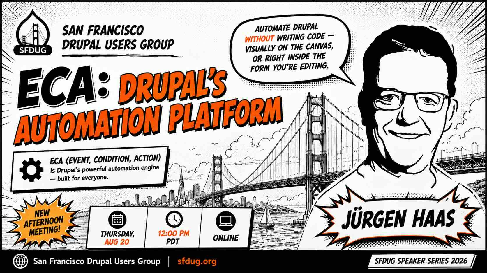

Automate Drupal without writing code — visually on the canvas, or right inside the form you’re editing.
ECA lets you automate a Drupal site without writing code: pick an event, add a condition, choose an action. Around 16,000 sites run it today, and its visual modeler — the drag-and-drop flowchart — is the part most people picture when they hear the name. It got a significant upgrade this year: a new modeler with color, dark mode, and full keyboard accessibility.
But the more consequential change is what happens when you never open the modeler. ECA now offers automation in place: click a field on a form, choose a template, and the model is built for you in the background — no canvas, no tokens, no need to know ECA is involved. For everyone else, there’s a debugger that replays what your site actually did, step by step, with every variable visible along the way.
If you want to get the most out of this session, take five minutes and run through these steps:
From a terminal:
composer require drupal/eca_starterkit
drush recipe ../recipes/eca_starterkitThen, as an administrator:
Your form is now altered. No custom module, no hook_form_alter, and nothing that required you to know ECA was involved. (Recipe path may vary with your project layout.)
Come without doing it and you’ll follow along fine — but if you do it, you’ll have your own questions ready. Won’t that be fun?
Jürgen Haas created ECA and maintains it, and is a Drupal core subsystem maintainer for the new admin theme. He last spoke to SFDUG in January 2022, when ECA was six months old and had about thirty installs.
Missed one? Every SFDUG meetup is recorded. Twenty years of talks — from Views deep-dives to accessibility, migrations, and the new AI tooling.
In April 2006, Zack Rosen and Gregory Heller organized the first Drupal Camp SF — a two-day training at CivicSpace’s offices with Jeff Robbins from Lullabot. It sold out in five days; half the attendees flew in from out of state.
That was the beginning. We’re still here, still meeting every month.
We’re part of the wider Bay Area Drupal community behind the Bay Area Drupal Camp. Our monthly meetups may soon be hosted right alongside BADCamp — same friendly crowd, more ways to connect year-round.
Visit Bay Area Drupal Camp →